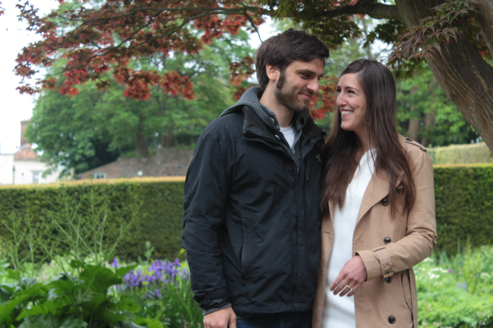

|
(Seite auf Deutsch / Page in German)
We, Sonja Demirdag and Benedikt Kolb, will get married on September 5, 2015 in St. Gumbertus in Ansbach. After church, we want to celebrate with you at Orangerie Ansbach!

Getting there
Most importantly for English-speaking guests: We will organise a bus from Fürth to church/Orangerie Ansbach. It will leave at some point (to be announced) from Fürth and take people directly to church in Ansbach. In case you come by car, there will be parking lots in front of the Orangerie. We recommend parking there and walking the approx. 500 meters to church, see map below.
Programme
ca. 12:30 We will charter a bus to bring guests from Fürth to Ansbach. Details will be announced on time!
14:00 Church service in St. Gumbertus, Ansbach, following the
Syrian Orthodox rite (mostly in Arameic, important passages will be translated to German, so please brush up your knowledge of either of these -- or prepare to focus on the visual impressions...)
16:00 Champagne reception at the Orangerie; after that coffee and cake will be served.
19:30 Dinner at the Orangerie. There will be a menu with pork and a vegetarian alternative (could you shortly drop me a line if you opt for the latter?).
ca. 2:30 Return of the bus from Ansbach to Fürth.
How to get there and where to stay
I recommend flying to Nuremberg Airport, which is served by Ryanair. There's a metro going to Nuremberg/Fürth from the airport.
If you come from Florence, you might also consider the night train from Florence to Munich. They have compartments of six bunk beds and you won't have to change from around 10 p.m. to 6:30 a.m., so I always have good sleep in those. With a connecting train to Nuremberg/Fürth it's about 85 euros one-way if you book early.
Unfortunately, we will not be able to have all of you guests over at our places. But we will check for good and affordable hotels close to
our place
, and hopefully get one where all guests from far away can stay together. Let us know when you make definitive plans for how long you'll stay, and we will help to organise some rooms.
Gifts
Hey lovelies, you might be thinking about this particularly awesome gift that you want to make us... To be honest, if you want to make us happy, just set free your creativity in selecting a nice card and put something flat into it. That would be the nicest and most useful gift you can make us, besides your presence at our wedding, of course ;)
Other points
After the wedding we will post the pictures of the party here.
|